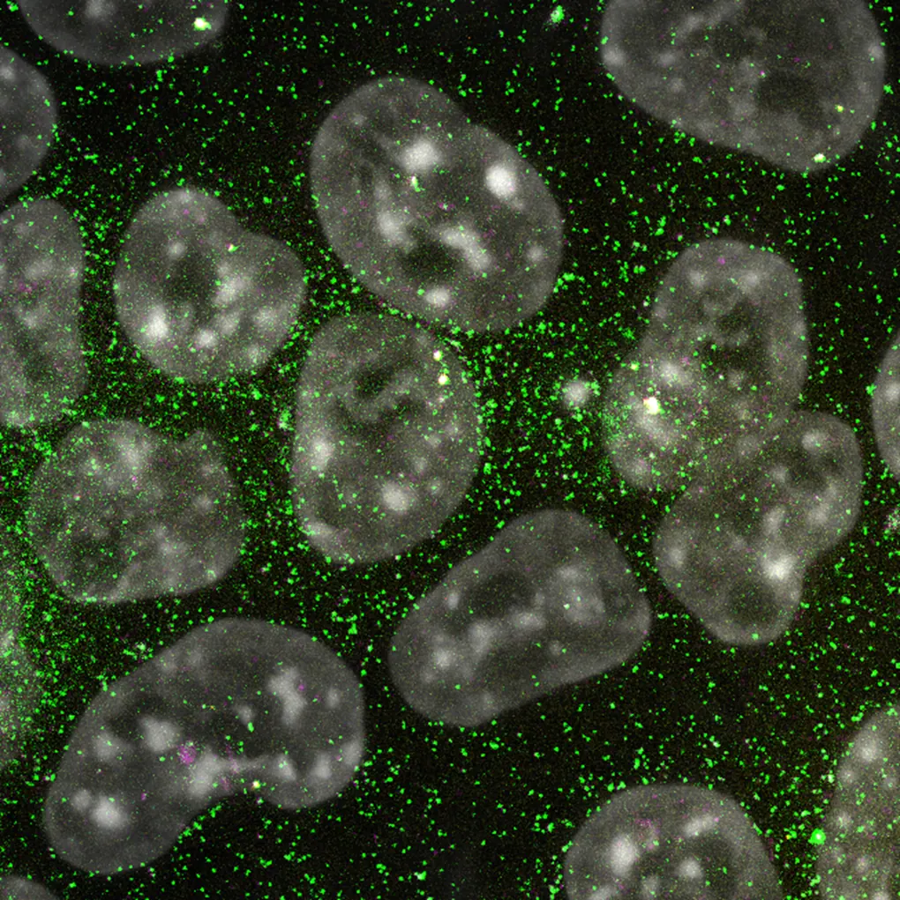
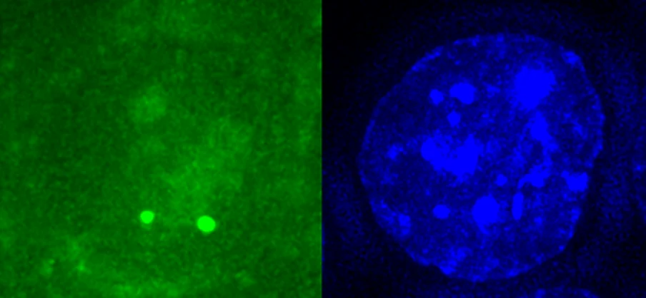
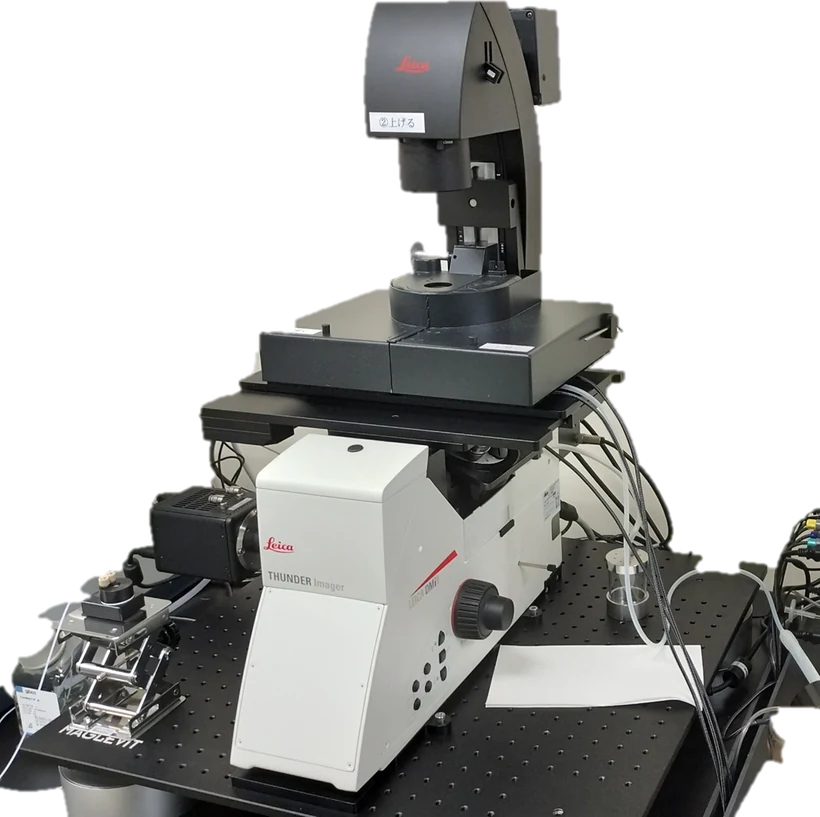
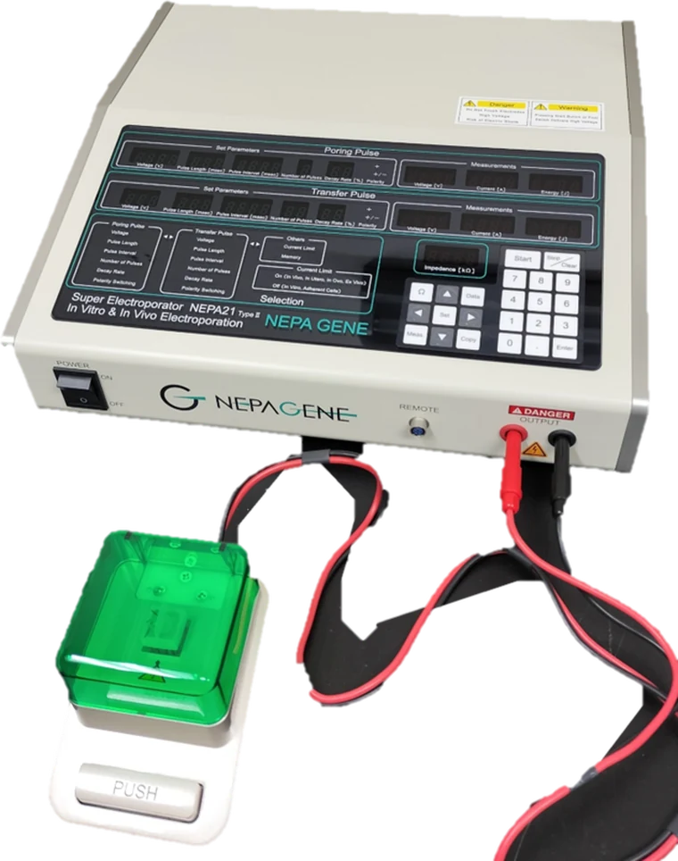
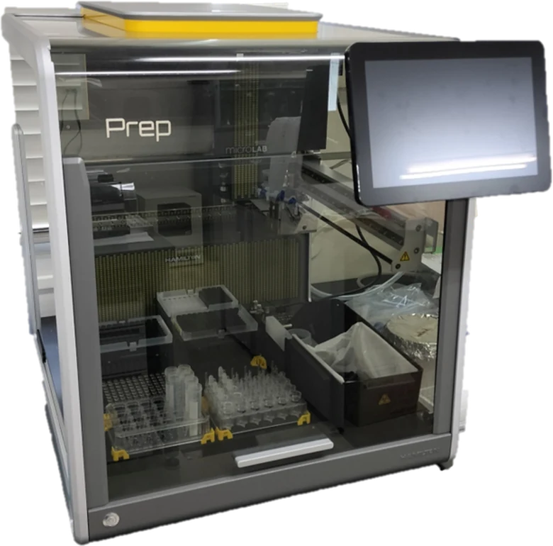

最先端の蛍光イメージングを駆使し、時空間的な動態情報を基盤に生命現象を解き明かす。
エピゲノム編集技術の新規開発、ゲノムインプリンティングの制御機構、高次ゲノム構造による転写制御メカニズムの解明を主要テーマとしています。
獨協医科大学は、豊かな自然に囲まれた静謐な環境にあり、研究活動に没頭できるロケーションです。充実した共通機器センター、医学部ならではの豊富なリソース、手厚い研究支援体制が整っており、キャリアを築く場として最適な環境を提供できます。独自の視点でサイエンスを切り拓きたい方は、ぜひお気軽にご連絡ください。

獨協医科大学 ゲノム医科学講座 ｜ 時空間エピゲノムイメージング・ライブオミクス。「エピゲノム」と「イメージング」を融合させた独自の研究を、私たちと共に展開してくれる方を待っています。
公募要項を見る獨協医科大学 ゲノム医科学 准教授。JST さきがけ研究者（兼任）。
分子生物学・細胞培養・イメージングの実験を支えています。
分子生物学・細胞培養・イメージングの実験を支えています。
現在は3名の少人数チームです。博士課程大学院生・ポスドクを募集中。

防振台上に設置した、ライブイメージング用の蛍光顕微鏡システム。

培養細胞への遺伝子導入に使用しています。

分注操作を自動化し、実験のスループットと再現性を高めています。